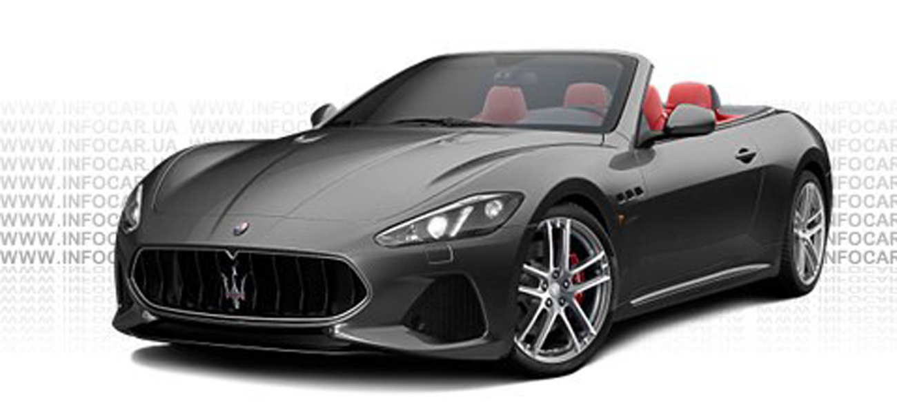

Maserati GranCabrio- двухдверный четырехместный кабриолет , который производится компанией Maserati , впервые представлен 2009 года в рамках Франкфуртского автосалона . Есть версии Maserati GranTurismo . Основными конкурентами Гран Кабрио является Mercedes SL и Porsche 911 Cabriolet.
Для Гран Кабрио доступен только один вид двигателя - 4,7-литровый, 8-цилиндровый мотор, мощностью 435 л.с. Разгон до 100 км / ч происходит за 5 с., Независимо от модели Sport или MC. Крутящий момент этого силового агрегата 489/4750 Нм / (об / мин). Расход топлива при езде в городе составляет 23,3 л / 100 км, по трассе - 10,6 л / 100 км, при этом показатель расхода топлива при смешанном цикле 15,3 л / 100 км. Двигатель работает в паре с 6-ступенчатой АКПП DSG, а автомобиль оснащается задним приводом.